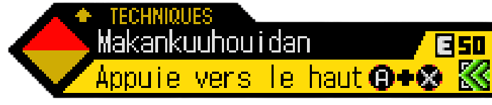
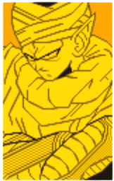
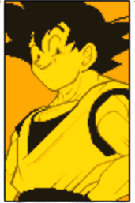
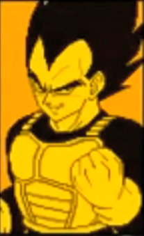

| Bouton | Action |
|---|---|
| Y | Coup faible |
| X | Coup fort |
| A | Projectile |
| B | Garde |
| R | Charge de Ki |
| L | État spécial (Kaioken) |
| Y + B | Projection |
| X + A | Coups spéciaux |
| Technique | Infos | Commande | Visuel |
|---|---|---|---|
| Projection scindante | Balance l'ennemi devant soi tout en le tranchant | Y + B |  |
| Technique | Infos | Détails | Commande | Visuel |
|---|---|---|---|---|
| Makankosappo | Rayon classique | X + A (en face de l'ennemi) |  | |
| Gekiretsukoudan | Attaque puissante mais courte portée | X + A (au dessus de l'ennemi) |  | |
| Makankuuhouidan |  | Projectile classique | X + A (en dessous de l'ennemi) |  |
| Technique | Infos | Détails | Commande | Visuel |
|---|---|---|---|---|
| Shinmafukumetsu | Charge | X + A (en dessous de l'ennemi) + nécessite HP faible & Ki ≥ 150 |  |
| Technique | Infos | Détails | Commande | Visuel |
|---|---|---|---|---|
| Attaque feintée | Nécessite d'être avec Goku et d'avoir 200 de ki |  | ||
| Tir maléfique | Nécessite d'être avec Gohan et d'avoir 200 de ki |  | ||
| Makankosappo | Nécessite d'être avec Gohan (Super Saiyan 2) et d'avoir 200 de ki |  | ||
| Tir d'outsider | Nécessite d'être avec Vegeta et d'avoir 200 de ki |  | ||
| Attaque volleyball | Nécessite d'être avec Gotenks (Super Saiyan 3) et d'avoir 200 de ki |  |
| Technique | Infos | Détails | Commande | Visuel |
|---|---|---|---|---|
| Triple Attaque |  | Nécessite d'être avec Goku et Vegeta, tout en ayant 200 de ki |  |
| Technique | Infos | Détails | Commande | Condition | Visuel |
|---|---|---|---|---|---|
| Régénération | Technique régénérant les PV au fur et à mesure du combat | L | Energie à 100 |  |